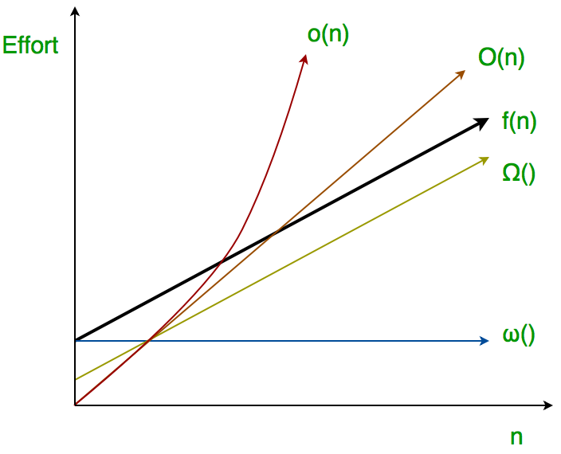

Data Strcuture & Algorithms
Asymptotic Analysis
Asymptotic analysis of an algorithm refers to defining the mathematical boundation/framing of its run-time performance. Using asymptotic analysis, we can very well conclude the best case, average case, and worst case scenario of an algorithm.
Asymptotic analysis is input bound i.e., if there's no input to the algorithm, it is concluded to work in a constant time. Other than the "input" all other factors are considered constant.
Asymptotic notations:
- Big-O notation (Worst Case)
- Little-o notation
- Big-Omega notation (Best Case)
- Little-omega notation
- Big-Theta notation (Average Case)
Big-O Notation
Big-O notation represents the tight upper bound of the running time of an algorithm, even though, as written, it can also be a loose upper-bound. Big-O measures the longest amount of time an algorithm can possibly take to complete. Thus, it gives the worst-case complexity of an algorithm.
Little-o Notation
To make Big-O's role as a tight upper-bound more clear, little-o notation is used to describe an upper-bound that cannot be asymptotically tight. Thus, little-o means loose upper bound of the running time of an algorithm. Little-o is a rough estimate of the maximum order of growth whereas Big-O may be the actual order of growth.
Big-Omega Notation
Big-Omega notation represents the tight lower bound of the running time of an algorithm. It measures the best amount of time an algorithm can possibly take to complete. Thus, it provides the best case complexity of an algorithm.
Little-omega Notation
Big-Omega is the tight lower bound notation and Little-omega describes the loose lower bound. Little-omega is a rough estimate of the order of growth whereas Big-Omega may represent the exact order of growth. We use Little-omega to denote a lower bound that is not asymptotically tight.
Relationship between Big-O, Little-o, Big-Omega, Little-omega

Big-Theta Notation
Big-Theta notation encloses the function from above and below. Since it represents the upper and the lower bound of the running time of an algorithm, it is used for analyzing the average-case complexity of an algorithm.
Amortized Analysis
Amortized analysis is a method of analyzing algorithms that can help us determine an upper bound on the complexity of an algorithm. This is particular useful when analyzing operations on data structures, when they involve slow, rarely occurring operations and fast, more common operations. With this disparity between each operations’ complexity, it is difficult to get a tight bound on the overall complexity of a sequence of operations using worst-case analysis. Amortized analysis provides us with a way of averaging the slow and fast operations together to obtain a tight upper bound on the overall algorithm runtime.
Amortized analysis differs from average-case analysis in that probability is not involved; an amortized analysis guarantees the average performance of each operation in the worst case.
There are three main types of amortized analysis:
- Aggregate analysis
- Accounting method
- Potential method
Algorithm Analysis

Math Formulas
Physical Distance
Distance is a numerical measurement of how far apart two objects or points are.
Euclidean Distance
The Euclidean distance between two points in euclidean space is the length of a line segment between the two points.
Manhattan Distance
Chebyshev Distance
Octile Distance
Sexvigintile Distance
Relationship of Distances
Kinematics
SUVAT Equations